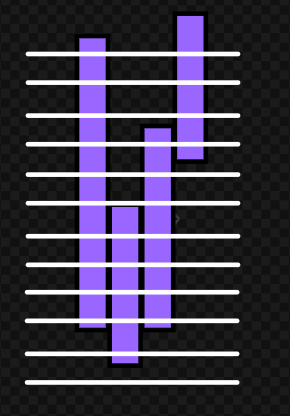

状态压缩¶
在记忆化搜索中，如果我们要枚举一个排列的所有可能性，那么我们就需要使用一个cnt数组在dfs中记录那些数字已经被使用了。但是在dp中，不同的情况之间的计算是并行的，我们不能像dfs中那样记录cnt数组了。怎么办呢？
通常情况下，如果dp中需要计入类似cnt的东西，那么需要记录的项目通常不超过30。这时我们就可以使用一个数字来记录使用情况了——记录数字n为状态，作为dp的一个维度。n在二进制下的表达就可以看成一个bool类型的数组了！
这就是状态压缩。
例题 #1 [USACO06NOV]Corn Fields G¶
题目描述
农场主 \(\rm John\) 新买了一块长方形的新牧场，这块牧场被划分成 \(M\) 行 \(N\) 列 \((1 \le M \le 12; 1 \le N \le 12)\)，每一格都是一块正方形的土地。 \(\rm John\) 打算在牧场上的某几格里种上美味的草，供他的奶牛们享用。
遗憾的是，有些土地相当贫瘠，不能用来种草。并且，奶牛们喜欢独占一块草地的感觉，于是 \(\rm John\) 不会选择两块相邻的土地，也就是说，没有哪两块草地有公共边。
\(\rm John\) 想知道，如果不考虑草地的总块数，那么，一共有多少种种植方案可供他选择？（当然，把新牧场完全荒废也是一种方案）
输入格式
第一行：两个整数 \(M\) 和 \(N\)，用空格隔开。
第 \(2\) 到第 \(M+1\) 行：每行包含 \(N\) 个用空格隔开的整数，描述了每块土地的状态。第 \(i+1\) 行描述了第 \(i\) 行的土地，所有整数均为 \(0\) 或 \(1\) ，是 \(1\) 的话，表示这块土地足够肥沃，\(0\) 则表示这块土地不适合种草。
输出格式
一个整数，即牧场分配总方案数除以 \(100,000,000\) 的余数。
练习 #1 [NOIP2016 提高组] 愤怒的小鸟¶
题目背景
NOIP2016 提高组 D2T3
题目描述
Kiana 最近沉迷于一款神奇的游戏无法自拔。
简单来说，这款游戏是在一个平面上进行的。
有一架弹弓位于 \((0,0)\) 处，每次 Kiana 可以用它向第一象限发射一只红色的小鸟，小鸟们的飞行轨迹均为形如 \(y=ax^2+bx\) 的曲线，其中 \(a,b\) 是 Kiana 指定的参数，且必须满足 \(a < 0\)，\(a,b\) 都是实数。
当小鸟落回地面（即 \(x\) 轴）时，它就会瞬间消失。
在游戏的某个关卡里，平面的第一象限中有 \(n\) 只绿色的小猪，其中第 \(i\) 只小猪所在的坐标为 \(\left(x_i,y_i \right)\)。
如果某只小鸟的飞行轨迹经过了 \(\left( x_i, y_i \right)\)，那么第 \(i\) 只小猪就会被消灭掉，同时小鸟将会沿着原先的轨迹继续飞行；
如果一只小鸟的飞行轨迹没有经过 \(\left( x_i, y_i \right)\)，那么这只小鸟飞行的全过程就不会对第 \(i\) 只小猪产生任何影响。
例如，若两只小猪分别位于 \((1,3)\) 和 \((3,3)\)，Kiana 可以选择发射一只飞行轨迹为 \(y=-x^2+4x\) 的小鸟，这样两只小猪就会被这只小鸟一起消灭。
而这个游戏的目的，就是通过发射小鸟消灭所有的小猪。
这款神奇游戏的每个关卡对 Kiana 来说都很难，所以 Kiana 还输入了一些神秘的指令，使得自己能更轻松地完成这个游戏。这些指令将在【输入格式】中详述。
假设这款游戏一共有 \(T\) 个关卡，现在 Kiana 想知道，对于每一个关卡，至少需要发射多少只小鸟才能消灭所有的小猪。由于她不会算，所以希望由你告诉她。
输入格式
第一行包含一个正整数 \(T\)，表示游戏的关卡总数。
下面依次输入这 \(T\) 个关卡的信息。每个关卡第一行包含两个非负整数 \(n,m\)，分别表示该关卡中的小猪数量和 Kiana 输入的神秘指令类型。接下来的 \(n\) 行中，第 \(i\) 行包含两个正实数 \(x_i,y_i\)，表示第 \(i\) 只小猪坐标为 \((x_i,y_i)\)。数据保证同一个关卡中不存在两只坐标完全相同的小猪。
如果 \(m=0\)，表示 Kiana 输入了一个没有任何作用的指令。
如果 \(m=1\)，则这个关卡将会满足：至多用 \(\lceil n/3 + 1 \rceil\) 只小鸟即可消灭所有小猪。
如果 \(m=2\)，则这个关卡将会满足：一定存在一种最优解，其中有一只小鸟消灭了至少 \(\lfloor n/3 \rfloor\) 只小猪。
保证 \(1\leq n \leq 18\)，\(0\leq m \leq 2\)，\(0 < x_i,y_i < 10\)，输入中的实数均保留到小数点后两位。
上文中，符号 \(\lceil c \rceil\) 和 \(\lfloor c \rfloor\) 分别表示对 \(c\) 向上取整和向下取整，例如：\(\lceil 2.1 \rceil = \lceil 2.9 \rceil = \lceil 3.0 \rceil = \lfloor 3.0 \rfloor = \lfloor 3.1 \rfloor = \lfloor 3.9 \rfloor = 3\)。
思路¶
我们要求出使用最少的抛物线覆盖所有点。首先明确两个点（除(0,0)）可以确定一条抛物线，两个点x不相同。那么一共就只有\(n^2\)条抛物线。我们要用数学方法求出每条抛物线经过了那些点
是典型的重复覆盖问题。用dancing links是最优解。
暴力的话就是


左图中每一条紫色块就是一个点，白线就是抛物线。块覆盖的白线表示该条抛物线可以覆盖该点。我们解决问题就是要找最少的白线使得每一块上都有白线经过。
本题的dp就是记忆化搜索。记\(f_s\)来保存状态为s时的res防止重复搜索。

注意验证二次函数合法性：\(a<0,x1≠x2\)
/*
Edit by Ntsc.
*/
#include<bits/stdc++.h>
using namespace std;
#define int long long
#define pb push_back
#define ull unsigned long long
#define pii pair<int, int>
#define pf first
#define ps second
#define rd read()
#define ot write
#define nl putchar('\n')
inline int rd{
int xx=0,ff=1;
char ch=getchar();
while(ch<'0'||ch>'9') {if(ch=='-') ff=-1;ch=getchar();}
while(ch>='0'&&ch<='9') xx=xx*10+(ch-'0'),ch=getchar();
return xx*ff;
}
inline void write(int out){
if(out<0) putchar('-'),out=-out;
if(out>9) write(out/10);
putchar(out%10+'0');
}
const int N=1e3+5;
const int M=5e6+5;
const int INF=2e9+5;
const int MOD=1e9+7;
const int BASE=17737;
bool f1;
int f[M],n,m;
vector<int> s;//状态
int pa[N][N];
struct node{
double x,y;
}q[N];
bool cmp(double a,double b){
if(fabs(a-b)<0.000001)return 1;
return 0;
}
signed main(){
// freopen("P5431_1.in", "r", stdin);
// freopen("chfran.out", "w", stdout);
// ios::sync_with_stdio(false);
// cin.tie(0);cout.tie(0);
int T=rd;
while(T--){
n=rd,m=rd;
for(int i=0;i<n;i++)cin>>q[i].x>>q[i].y;
memset(pa,0,sizeof pa);
for(int i=0;i<n;i++){
pa[i][i]=1<<i;
for(int j=0;j<n;j++){
double x1=q[i].x,y1=q[i].y;
double x2=q[j].x,y2=q[j].y;
if(cmp(x1,x2))continue;//注意eps不能用==
double a=(y1/x1-y2/x2)/(x1-x2);
// cerr<<"a="<<a<<endl;
if(a>=0)continue;
double b=(y1/x1)-a*x1;
int cnt=0;
for(int k=0;k<n;k++){
double x=q[k].x,y=q[k].y;
if(cmp(a*x*x/标记经过
}
pa[i][j]=cnt;
}
}
memset(f,0x3f,sizeof(f));
f[0]=0;
for(int i=0;i+1<1<<n;i++){
int x=0;
for(int j=0;j<n;j++){
if(!(i>>j&1)){x=j;break;}
}
for(int j=0;j<n;j++)f[i|pa[x][j]]=min(f[i]+1,f[i|pa[x][j]]);
}
cout<<f[(1<<n)-1]<<endl;
}
return 0;
}
/*
5 4
PHPP
PPHH
PPPP
PHPP
PHHP
*/
【数据范围】
| 测试点编号 | \(n\leqslant\) | \(m=\) | \(T\leqslant\) |
|---|---|---|---|
| \(1\) | \(2\) | \(0\) | \(10\) |
| \(2\) | \(2\) | \(0\) | \(30\) |
| \(3\) | \(3\) | \(0\) | \(10\) |
| \(4\) | \(3\) | \(0\) | \(30\) |
| \(5\) | \(4\) | \(0\) | \(10\) |
| \(6\) | \(4\) | \(0\) | \(30\) |
| \(7\) | \(5\) | \(0\) | \(10\) |
| \(8\) | \(6\) | \(0\) | \(10\) |
| \(9\) | \(7\) | \(0\) | \(10\) |
| \(10\) | \(8\) | \(0\) | \(10\) |
| \(11\) | \(9\) | \(0\) | \(30\) |
| \(12\) | \(10\) | \(0\) | \(30\) |
| \(13\) | \(12\) | \(1\) | \(30\) |
| \(14\) | \(12\) | \(2\) | \(30\) |
| \(15\) | \(15\) | \(0\) | \(15\) |
| \(16\) | \(15\) | \(1\) | \(15\) |
| \(17\) | \(15\) | \(2\) | \(15\) |
| \(18\) | \(18\) | \(0\) | \(5\) |
| \(19\) | \(18\) | \(1\) | \(5\) |
| \(20\) | \(18\) | \(2\) | \(5\) |
练习 #2 [NOI2001] 炮兵阵地¶
题目描述
司令部的将军们打算在 \(N\times M\) 的网格地图上部署他们的炮兵部队。
一个 \(N\times M\) 的地图由 \(N\) 行 \(M\) 列组成，地图的每一格可能是山地（用 \(\texttt{H}\) 表示），也可能是平原（用 \(\texttt{P}\) 表示），如下图。
在每一格平原地形上最多可以布置一支炮兵部队（山地上不能够部署炮兵部队）；一支炮兵部队在地图上的攻击范围如图中黑色区域所示：

如果在地图中的灰色所标识的平原上部署一支炮兵部队，则图中的黑色的网格表示它能够攻击到的区域：沿横向左右各两格，沿纵向上下各两格。
图上其它白色网格均攻击不到。从图上可见炮兵的攻击范围不受地形的影响。
现在，将军们规划如何部署炮兵部队，在防止误伤的前提下（保证任何两支炮兵部队之间不能互相攻击，即任何一支炮兵部队都不在其他支炮兵部队的攻击范围内），在整个地图区域内最多能够摆放多少我军的炮兵部队。
思路¶
假如我们只考虑竖直方向，那么我们在考虑第i行时要知道i-1,i-2行的状态。如果在第j列，i-1或者i-2行有炮兵，那么第i行就不能摆炮兵。同时炮兵不能在山地上
记录\(f_{i,j,k}\)为考虑第i行，第i-1,i行的状态分别为j,k的合法状态的最大状态数。为了知道i-1,i-2行的状态，我们从\(f_{i-1}\)转移来即可。
/*
Edit by Ntsc.
*/
#include<bits/stdc++.h>
using namespace std;
#define int long long
#define pb push_back
#define ull unsigned long long
#define pii pair<int, int>
#define pf first
#define ps second
#define rd read()
#define ot write
#define nl putchar('\n')
inline int rd{
int xx=0,ff=1;
char ch=getchar();
while(ch<'0'||ch>'9') {if(ch=='-') ff=-1;ch=getchar();}
while(ch>='0'&&ch<='9') xx=xx*10+(ch-'0'),ch=getchar();
return xx*ff;
}
inline void write(int out){
if(out<0) putchar('-'),out=-out;
if(out>9) write(out/10);
putchar(out%10+'0');
}
const int N=1e3+5;
const int M=2e3+5;
const int INF=2e9+5;
const int MOD=1e9+7;
const int BASE=17737;
bool f1;
int f[2][M][M],cnt[M],n,m;
int g[N];//每一行的山地状态
vector<int> s;//状态
bool check(int s){
for(int i=0;i<m;i++){
if((s>>i&1)&&((s>>i/只有当前这一位是1才需要判定与第i-1,i-2行是否合法
}
return 1;
}
int count(int x){//计算x的二进制下有几个1
int res=0;
while(x){
res+=x&1;
x>>=1;
}
return res;
}
signed main(){
// freopen("P5431_1.in", "r", stdin);
// freopen("chfran.out", "w", stdout);
// ios::sync_with_stdio(false);
// cin.tie(0);cout.tie(0);
n=rd,m=rd;
for(int i=0;i<n;i++){
for(int j=0;j<m;j++){
char c;
cin>>c;
if(c=='H')g[i]+=1<<j;
}
}
for(int i=0;i<1<<m;i++){
if(check(i)){
s.pb(i);
cnt[i]=count(i);
}
}
// cerr<<s.size()<<endl;
// cerr<<"OK";
for(int i=0;i<n+2;i++){
for(int j=0;j<s.size();j++){
for(int k=0;k<s.size();k++){
for(int u=0;u<s.size();u++){
int a=s[u],b=s[j],c=s[k];
// cerr<<"U";
if((a&b)||(a&c)||(b&c))continue;
if(g[i]&c)continue;
// cerr<<"K";
f[i&1][j][k]=max(f[i&1][j][k],f[i-1&1][u][j]+cnt[c]);
}
}
}
}
cout<<f[n+1&1][0][0];
return 0;
}
/*
*/
对于 \(100\%\) 的数据，\(1 \leq N\le 100\)，\(1 \leq M\le 10\)，保证字符仅包含 P 与 H。
练习 #3 [NOIP2017 提高组] 宝藏¶
题目背景
NOIP2017 D2T2
题目描述
参与考古挖掘的小明得到了一份藏宝图，藏宝图上标出了 \(n\) 个深埋在地下的宝藏屋， 也给出了这 \(n\) 个宝藏屋之间可供开发的 \(m\) 条道路和它们的长度。
小明决心亲自前往挖掘所有宝藏屋中的宝藏。但是，每个宝藏屋距离地面都很远，也就是说，从地面打通一条到某个宝藏屋的道路是很困难的，而开发宝藏屋之间的道路则相对容易很多。
小明的决心感动了考古挖掘的赞助商，赞助商决定免费赞助他打通一条从地面到某个宝藏屋的通道，通往哪个宝藏屋则由小明来决定。
在此基础上，小明还需要考虑如何开凿宝藏屋之间的道路。已经开凿出的道路可以 任意通行不消耗代价。每开凿出一条新道路，小明就会与考古队一起挖掘出由该条道路所能到达的宝藏屋的宝藏。另外，小明不想开发无用道路，即两个已经被挖掘过的宝藏屋之间的道路无需再开发。
新开发一条道路的代价是 \(\mathrm{L} \times \mathrm{K}\)。其中 \(L\) 代表这条道路的长度，\(K\) 代表从赞助商帮你打通的宝藏屋到这条道路起点的宝藏屋所经过的宝藏屋的数量（包括赞助商帮你打通的宝藏屋和这条道路起点的宝藏屋） 。
请你编写程序为小明选定由赞助商打通的宝藏屋和之后开凿的道路，使得工程总代价最小，并输出这个最小值。
思路¶
可以抽象为一颗树，答案即类似最小生成树。但是这里的路径等价是不固定的，对于起点的长度\times 路径长度。
定义状态f_{i,j}为树的前j层的点集为i时的最小值。~然后我们枚举第j+1层的点集s，计算出i，根据f_{i,j}计算出f_{i|s,j+1}~然后我们从i中枚举子集s作为第j层的点集，计算出前j-1层的点集为i^s，然后根据f_{i^s,j-1}计算出f_{i,j}。；
为了加快转移过程，我们可以预处理g(i,j)为从点i到点集j的最小距离

一个枚举子集的小技巧，复杂度O(2^{n+1})
for(int i=1;i<1<<n;i++){
for(int j=i-1&i;j;j=j-1&i){
//枚举i的子集
}
}
图示

/*
Edit by Ntsc.
*/
#include<bits/stdc++.h>
using namespace std;
#define int long long
#define pb push_back
#define ull unsigned long long
#define pii pair<int, int>
#define pf first
#define ps second
#define rd read()
#define ot write
#define nl putchar('\n')
inline int rd{
int xx=0,ff=1;
char ch=getchar();
while(ch<'0'||ch>'9') {if(ch=='-') ff=-1;ch=getchar();}
while(ch>='0'&&ch<='9') xx=xx*10+(ch-'0'),ch=getchar();
return xx*ff;
}
inline void write(int out){
if(out<0) putchar('-'),out=-out;
if(out>9) write(out/10);
putchar(out%10+'0');
}
const int N=1e2+5;
const int M=5e3+5;
const int INF=2e9+5;
const int MOD=1e9+7;
const int BASE=17737;
bool f1;
int f[M][N],dis[N][N],n,m;
int g[N][M];//每一行的山地状态
vector<int> s;//状态
bool check(int s){
for(int i=0;i<m;i++){
if((s>>i&1)&&((s>>i/只有当前这一位是1才需要判定与第i-1,i-2行是否合法
}
return 1;
}
int count(int x){//计算x的二进制下有几个1
int res=0;
while(x){
res+=x&1;
x>>=1;
}
return res;
}
signed main(){
// freopen("P5431_1.in", "r", stdin);
// freopen("chfran.out", "w", stdout);
// ios::sync_with_stdio(false);
// cin.tie(0);cout.tie(0);
n=rd,m=rd;
memset(dis,0x3f,sizeof dis);
for(int i=0;i<n;i++)dis[i][i]=0;
for(int i=1;i<=m;i++){
int a=rd-1,b=rd-1,c=rd;//偏移
dis[a][b]=dis[b][a]=min(c,dis[a][b]);
}
memset(g,0x3f,sizeof g);
for(int i=0;i<n;i++){
for(int j=0;j<1<<n;j++){
for(int k=0;k<n;k++){
if(j>>k&1)g[i][j]=min(g[i][j],dis[i][k]);
}
}
}
memset(f,0x3f,sizeof f);
for(int i=0;i<n;i++){
f[1<<i][0]=0;
}
for(int i=1;i<1<<n;i++){
for(int j=i-1&i;j;j=j-1&i){
//枚举i的子集
int r=i^j,res=0;
for(int k=0;k<n;k++){
if(j>>k&1){
res+=g[k][r];
if(res>=INF)break;
}
}
if(res>=INF)continue;
for(int k=1;k<n;k++)f[i][k]=min(f[i][k],f[r][k-1]/k为层数
}
}
int ans=INF;
for(int i=0;i<n;i++)ans=min(ans,f[(1<<n)-1][i]);
cout<<ans<<endl;
return 0;
}
/*
5 4
PHPP
PPHH
PPPP
PHPP
PHHP
*/
对于 $ 100\%$ 的数据： \(1 \le n \le 12\)，\(0 \le m \le 10^3\)，\(v \le 5\times 10^5\)。
练习 #4 [NOI2015] 寿司晚宴¶
题目描述
为了庆祝 NOI 的成功开幕，主办方为大家准备了一场寿司晚宴。小 G 和小 W 作为参加 NOI 的选手，也被邀请参加了寿司晚宴。
在晚宴上，主办方为大家提供了 \(n−1\) 种不同的寿司，编号 \(1,2,3,\ldots,n-1\)，其中第 \(i\) 种寿司的美味度为 \(i+1\)。（即寿司的美味度为从 \(2\) 到 \(n\)）
现在小 G 和小 W 希望每人选一些寿司种类来品尝，他们规定一种品尝方案为不和谐的当且仅当：小 G 品尝的寿司种类中存在一种美味度为 \(x\) 的寿司，小 W 品尝的寿司中存在一种美味度为 \(y\) 的寿司，而 \(x\) 与 \(y\) 不互质。
现在小 G 和小 W 希望统计一共有多少种和谐的品尝寿司的方案（对给定的正整数 \(p\) 取模）。注意一个人可以不吃任何寿司。
输入格式
输入文件的第 \(1\) 行包含 \(2\) 个正整数 \(n, p\) 中间用单个空格隔开，表示共有 \(n\) 种寿司，最终和谐的方案数要对 \(p\) 取模。
输出格式
输出一行包含 \(1\) 个整数，表示所求的方案模 \(p\) 的结果。

勘误：$0 < p \le 10^9 $
题意：
求方案数，使得两个人选择的数字（[2,n]的子集）两两互质。
要让两个人选的数字全部互质，那么有一个显然的充要条件：甲选的数字的质因数集合和乙选的数字的质因数集合没有交集
如果是n<30，那么范围内的质数很少，我们可以状态压缩
记f_{i,S_1,S_2}为考虑i个数字时，甲集合的质因数集合为S_1，乙集合的质因数集合为 S_2时的方案数。压去第一维。
如果是n≤500，发现每一个数，其\(>\sqrt{500}\)的质数只有一个，所以我们单独记录这个质数。
然后，我们把2-n这些数按照大质因子大小排序，这样令大质因子相同的数排在一起（也就是不能甲乙同时选的）
我们记录三个相同数组：dp[S1][S2],f1[][],f2[][]，因为小质因数只有8个，所以0≤S1,S2≤255
对于每一段大质因子相同的数，我们在这一段开始的时候把dp的值赋给f1和f2，然后在这一段内部用刷表法推f1和f2，其中f1表示的就是这个大质因子让第一个人选，f2就是这个大质因子让第二个人选。
这一段数推完以后，再把f1f2合并到dp里面，dp[S1][S2]=f1[S1][S2]+f2[S1][S2]−dp[S1][S2]
这里减掉一个dp是因为两种情况会重复统计两个人都不选的情况（也就是原来的dp[S_1][S_2]的值），减掉即可。
/*
Keyblinds Guide
###################
@Ntsc 2024
- Ctrl+Alt+G then P : Enter luogu problem details
- Ctrl+Alt+B : Run all cases in CPH
- ctrl+D : choose this and dump to the next
- ctrl+Shift+L : choose all like this
- ctrl+K then ctrl+W: close all
- Alt/nxt pos'
*/
#include <bits/stdc++.h>
#include <queue>
using namespace std;
#define rep(i, l, r) for (int i = l, END##i = r; i <= END##i; ++i)
#define per(i, r, l) for (int i = r, END##i = l; i >= END##i; --i)
#define pb push_back
#define mp make_pair
#define int long long
#define pii pair<int, int>
#define ps second
#define pf first
// #define innt int
#define itn int
// #define inr intw
// #define mian main
// #define iont int
#define rd read()
int read(){
int xx = 0, ff = 1;
char ch = getchar();
while (ch < '0' || ch > '9') {
if (ch == '-')
ff = -1;
ch = getchar();
}
while (ch >= '0' && ch <= '9')
xx = xx * 10 + (ch - '0'), ch = getchar();
return xx * ff;
}
void write(int out) {
if (out < 0)
putchar('-'), out = -out;
if (out > 9)
write(out / 10);
putchar(out % 10 + '0');
}
#define ell dbg('\n')
const char el='\n';
const bool enable_dbg = 1;
template <typename T,typename... Args>
void dbg(T s,Args... args) {
if constexpr (enable_dbg){
cerr << s;
if(1)cerr<<' ';
if constexpr (sizeof...(Args))
dbg(args...);
}
}
#define zerol = 1
#ifdef zerol
#define cdbg(x...) do { cerr << #x << " -> "; err(x); } while (0)
void err() { cerr << endl; }
template<template<typename...> class T, typename t, typename... A>
void err(T<t> a, A... x) { for (auto v: a) cerr << v << ' '; err(x...); }
template<typename T, typename... A>
void err(T a, A... x) { cerr << a << ' '; err(x...); }
#else
#define dbg(...)
#endif
const int N = 5e2+ 5;
const int INF = 1e18;
const int M = 1e7;
int MOD = 1e9 + 7;
int n;
int p[11]={0,2,3,5,7,11,13,17,19,23};
struct node{
int big,s;
int v;
void init(){
int t=v;
big=-1;//唯一一个大质数单独处理
for(int i=1;i<=8;i++){
if(t%p[i]) continue;
s|=(1<<i-1);
while(t%p[i]==0) t/=p[i];
}
if(t!=1) big=t;
}
}a[N];
bool cmp(node a,node b){
return a.big<b.big;
}
int f[N][N],f1[N][N],f2[N][N];
void solve(){
n=rd,MOD=rd;
for(int i=1;i<n;i++){
a[i].v=i+1;
a[i].init();
}
sort(a+1,a+n,cmp);
f[0][0]=1;
for(int i=1;i<n;i++){
if(i==1||a[i].big!=a[i-1].big||a[i].big==-1){
memcpy(f1,f,sizeof f1);
memcpy(f2,f,sizeof f2);
}
for(int j=255;~j;j--){
for(int k=255;~k;k--){
if(j&k)continue;
if((a[i].s&j)==0) f2[j][k|a[i].s]=(f2[j][k|a[i].s]+f2[j][k]+MOD)%MOD;
if((a[i].s&k)==0) f1[j|a[i].s][k]=(f1[j|a[i].s][k]+f1[j][k]+MOD)%MOD;
}
}
if(i==n-1||a[i].big!=a[i+1].big||a[i].big==-1){
for(int j=255;~j;j--){
for(int k=255;~k;k--){
if(j&k)continue;
f[j][k]=(f1[j][k]+f2[j][k]+MOD-f[j][k]+MOD)%MOD;
}
}
}
}
int ans=0;
for(int j=255;~j;j--){
for(int k=255;~k;k--){
if(j&k)continue;
if(f[j][k])ans=(ans+f[j][k])%MOD;
}
}
cout<<ans<<endl;
}
signed main() {
// freopen(".in","r",stdin);
// freopen(".in","w",stdout);
int T=1;
while(T--){
solve();
}
return 0;
}